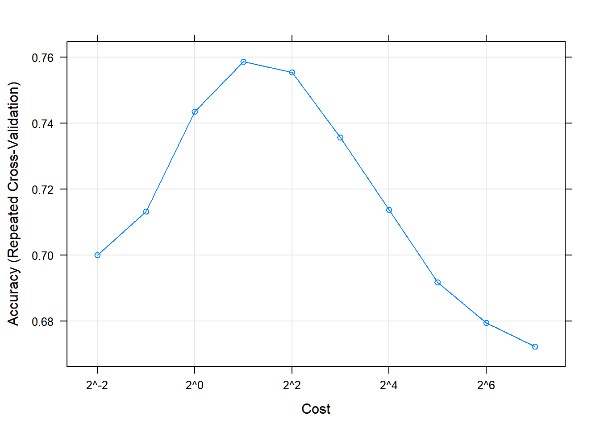

Data characteristics to evaluate
n/a
For skewness, general rule of thumb is if ratio of highest value to lowest value is greater than 20, there is significant skewness. If using the skewness statistic, a symmetric distribution will have a skewness value close to 0, right skewed distributions have a positive statistic and left skewed distributions have a negative statistic.
Transforming data with log, square root, or inverse could remove skewness.
library(AppliedPredictiveModeling)
library(e1071)
data("segmentationOriginal")
#apply(segmentationOriginal[, -(1:3)], 2, function(x) skewness(x))
# can't match the 2.39 from bookBox-Cox Transformation
This can be applied independently to each predictor that contains values > 0.
\[x^{*} = \left\{\begin{matrix} (x^{\lambda-1})/\lambda, & \lambda \neq 0 \\ log(x), & \lambda = 0 \end{matrix}\right.\]
Outliers
PCA
Missing Values
Removing Variables
library(AppliedPredictiveModeling)
library(e1071)
library(caret)
library(corrplot)
data("segmentationOriginal")
segData <- subset(segmentationOriginal, Case == "Train")
cellID <- segData$Cell
class <- segData$Class
case <- segData$Case
segData <- segData[, -(1:3)] # drop cols
statusColNum <- grep("Status", names(segData)) # binary versions of predictors
segData <- segData[, -statusColNum]
skewValues <- apply(segData, 2, skewness)
head(skewValues)## AngleCh1 AreaCh1 AvgIntenCh1 AvgIntenCh2 AvgIntenCh3 AvgIntenCh4
## -0.02426252 3.52510745 2.95918524 0.84816033 2.20234214 1.90047128# Box Cox Transform
Ch1AreaTrans <- BoxCoxTrans(segData$AreaCh1)
Ch1AreaTrans## Box-Cox Transformation
##
## 1009 data points used to estimate Lambda
##
## Input data summary:
## Min. 1st Qu. Median Mean 3rd Qu. Max.
## 150.0 194.0 256.0 325.1 376.0 2186.0
##
## Largest/Smallest: 14.6
## Sample Skewness: 3.53
##
## Estimated Lambda: -0.9head(segData$AreaCh1)## [1] 819 431 298 256 258 358predict(Ch1AreaTrans, head(segData$AreaCh1))## [1] 1.108458 1.106383 1.104520 1.103554 1.103607 1.105523# PCA using base R
pcaObject <- prcomp(segData,
center = TRUE, scale. = TRUE)
percentVariance <- pcaObject$sdev^2/sum(pcaObject$sdev^2)*100
percentVariance[1:3] # pct var explained## [1] 20.91236 17.01330 11.88689head(pcaObject$x[, 1:5]) # transformed object## PC1 PC2 PC3 PC4 PC5
## 2 5.0985749 4.5513804 -0.03345155 -2.640339 1.2783212
## 3 -0.2546261 1.1980326 -1.02059569 -3.731079 0.9994635
## 4 1.2928941 -1.8639348 -1.25110461 -2.414857 -1.4914838
## 12 -1.4646613 -1.5658327 0.46962088 -3.388716 -0.3302324
## 15 -0.8762771 -1.2790055 -1.33794261 -3.516794 0.3936099
## 16 -0.8615416 -0.3286842 -0.15546723 -2.206636 1.4731658head(pcaObject$rotation[, 1:3]) # loadings## PC1 PC2 PC3
## AngleCh1 0.001213758 -0.01284461 0.006816473
## AreaCh1 0.229171873 0.16061734 0.089811727
## AvgIntenCh1 -0.102708778 0.17971332 0.067696745
## AvgIntenCh2 -0.154828672 0.16376018 0.073534399
## AvgIntenCh3 -0.058042158 0.11197704 -0.185473286
## AvgIntenCh4 -0.117343465 0.21039086 -0.105060977# pre-processing with caret
trans <- preProcess(segData,
method = c("BoxCox", "center", "scale", "pca"))
trans## Created from 1009 samples and 58 variables
##
## Pre-processing:
## - Box-Cox transformation (47)
## - centered (58)
## - ignored (0)
## - principal component signal extraction (58)
## - scaled (58)
##
## Lambda estimates for Box-Cox transformation:
## Min. 1st Qu. Median Mean 3rd Qu. Max.
## -2.00000 -0.50000 -0.10000 0.05106 0.30000 2.00000
##
## PCA needed 19 components to capture 95 percent of the variancetransformed <- predict(trans, segData)
head(transformed)## PC1 PC2 PC3 PC4 PC5 PC6
## 2 1.5684742 6.2907855 -0.3333299 -3.063327 -1.3415782 0.3933609
## 3 -0.6664055 2.0455375 -1.4416841 -4.701183 -1.7422020 0.4313114
## 4 3.7500055 -0.3915610 -0.6690260 -4.020753 1.7927777 -0.8542507
## 12 0.3768509 -2.1897554 1.4380167 -5.327116 -0.4066757 1.1092318
## 15 1.0644951 -1.4646516 -0.9900478 -5.627351 -0.8650174 0.1070749
## 16 -0.3798629 0.2173028 0.4387980 -2.069880 -1.9363920 -0.3696683
## PC7 PC8 PC9 PC10 PC11 PC12
## 2 -1.31779481 -1.8965728 0.7111801 0.16193272 1.44061816 -0.6647078
## 3 1.28450248 -3.0829008 1.9973303 0.58665039 0.80080447 1.4480935
## 4 -0.07092724 -0.5997223 0.9873784 -0.47230884 1.22229470 1.1277348
## 12 0.70231874 -0.9667673 0.4970412 -0.10925035 1.59963522 -0.6665738
## 15 0.49640237 -0.6569112 0.4917103 -0.01652356 0.01154796 -0.7153114
## 16 0.01207458 -1.2991267 0.8748767 -0.28802701 -0.32026720 1.3544711
## PC13 PC14 PC15 PC16 PC17
## 2 -0.50341167 -0.5251037 0.209541528 0.001408739 0.783699478
## 3 0.44875803 -0.4299460 -0.610433146 -1.058349329 -0.791062674
## 4 -1.37477652 -1.4884756 -0.712689953 -0.359746977 -0.002913506
## 12 -1.26751477 -0.2010528 0.135890457 -1.125603114 -0.025376331
## 15 -0.06833084 -0.2925842 0.003031988 -0.046983964 -0.678036827
## 16 -0.68148834 0.3984937 -1.948861159 -0.746533391 1.413093003
## PC18 PC19
## 2 -0.55515083 0.68129112
## 3 0.06569274 0.14157724
## 4 1.35736326 0.10187098
## 12 -0.63185874 -0.96813663
## 15 -0.58461317 0.05084857
## 16 -1.96291699 0.73874900nearZeroVar(segData)## integer(0)correlations <- cor(segData)
correlations[1:4, 1:4]## AngleCh1 AreaCh1 AvgIntenCh1 AvgIntenCh2
## AngleCh1 1.000000000 -0.002627172 -0.04300776 -0.01944681
## AreaCh1 -0.002627172 1.000000000 -0.02529739 -0.15330301
## AvgIntenCh1 -0.043007757 -0.025297394 1.00000000 0.52521711
## AvgIntenCh2 -0.019446810 -0.153303007 0.52521711 1.00000000#corrplot(correlations, order = "hclust")
highCorr <- findCorrelation(correlations, cutoff = 0.75)
length(highCorr)## [1] 32head(highCorr)## [1] 23 40 43 36 7 15filteredSegData <- segData[, -highCorr]Data Splitting
Resampling Techniques
Choosing Tuning Parameters
Choosing Resampling Methods
Choosing Between Models
A paired t-test can be used to evaluate if there are statistically significant differences in model performance.
rm(list=ls())
library(AppliedPredictiveModeling)
library(caret)
#library(Design) # replaced with rms
library(rms)
library(e1071)
library(ipred)
library(MASS)
data(twoClassData)
str(predictors)## 'data.frame': 208 obs. of 2 variables:
## $ PredictorA: num 0.158 0.655 0.706 0.199 0.395 ...
## $ PredictorB: num 0.1609 0.4918 0.6333 0.0881 0.4152 ...str(classes)## Factor w/ 2 levels "Class1","Class2": 2 2 2 2 2 2 2 2 2 2 ...# data splitting
set.seed(1)
trainingRows <- createDataPartition(classes, p = 0.8, list = FALSE)
head(trainingRows)## Resample1
## [1,] 1
## [2,] 2
## [3,] 3
## [4,] 4
## [5,] 5
## [6,] 6trainPredictors <- predictors[trainingRows,]
trainClasses <- classes[trainingRows] # not a dataframe, just vector
testPredictors <- predictors[-trainingRows,]
testClasses <- classes[-trainingRows]
str(trainPredictors)## 'data.frame': 167 obs. of 2 variables:
## $ PredictorA: num 0.158 0.655 0.706 0.199 0.395 ...
## $ PredictorB: num 0.1609 0.4918 0.6333 0.0881 0.4152 ...str(testPredictors)## 'data.frame': 41 obs. of 2 variables:
## $ PredictorA: num 0.0658 0.1056 0.2909 0.4129 0.0472 ...
## $ PredictorB: num 0.1786 0.0801 0.3021 0.2869 0.0414 ...# caret fn 'maxdissim' generates test set using max dissimilarity sampling
# resampling
# - repeated training/test splits
set.seed(1)
repeatedSplits <- createDataPartition(trainClasses, p = 0.8, times = 3)
str(repeatedSplits)## List of 3
## $ Resample1: int [1:135] 1 2 4 5 6 8 9 10 11 12 ...
## $ Resample2: int [1:135] 2 3 4 6 7 8 9 11 14 15 ...
## $ Resample3: int [1:135] 4 5 6 7 8 9 11 13 14 15 ...# - k-fold CV
set.seed(1)
cvSplits <- createFolds(trainClasses, k = 10, returnTrain = TRUE)
str(cvSplits)## List of 10
## $ Fold01: int [1:151] 2 3 4 5 6 7 11 12 13 14 ...
## $ Fold02: int [1:150] 1 2 3 4 5 6 7 8 9 10 ...
## $ Fold03: int [1:150] 1 2 3 4 5 6 7 8 9 10 ...
## $ Fold04: int [1:151] 1 2 3 4 5 7 8 9 10 11 ...
## $ Fold05: int [1:150] 1 2 3 5 6 7 8 9 10 11 ...
## $ Fold06: int [1:150] 1 2 3 4 5 6 8 9 10 11 ...
## $ Fold07: int [1:150] 1 3 4 5 6 7 8 9 10 11 ...
## $ Fold08: int [1:151] 1 2 3 4 5 6 7 8 9 10 ...
## $ Fold09: int [1:150] 1 2 4 5 6 7 8 9 10 12 ...
## $ Fold10: int [1:150] 1 2 3 4 6 7 8 9 10 11 ...cvPredictors1 <- trainPredictors[cvSplits[[1]],]
cvClasses1 <- trainClasses[cvSplits[[1]]]
nrow(cvPredictors1)/nrow(trainPredictors)## [1] 0.9041916# - bootstrapping: createResamples
# - repeated CV: createMultiFolds
# model building
# using formula interface w large data can by unnecessarily slow
# - using knn3 from caret
trainPredictors <- as.matrix(trainPredictors)
knnFit <- knn3(x = trainPredictors, y = trainClasses, k = 5)
knnFit## 5-nearest neighbor model
## Training set outcome distribution:
##
## Class1 Class2
## 89 78testPredictions <- predict(knnFit, newdata = testPredictors, type = "class")
head(testPredictions)## [1] Class2 Class2 Class1 Class1 Class2 Class2
## Levels: Class1 Class2# determining tuning parameters
rm(list=ls())
data("GermanCredit")
set.seed(1056)
trainingRows <- createDataPartition(GermanCredit$Class, p = 0.8, list = FALSE)
GermanCreditTrain <- GermanCredit[trainingRows, -(1:9)] # drop first 9 cols
dropZeroVar <- nearZeroVar(GermanCreditTrain)
GermanCreditTrain <- GermanCreditTrain[, -dropZeroVar]
GermanCreditTest <- GermanCredit[-trainingRows, -(1:9)] # drop first 9 cols
GermanCreditTest <- GermanCreditTest[, -dropZeroVar]
svmFit <- train(Class ~.,
data = GermanCreditTrain,
method = "svmRadial",
preProc = c("center", "scale"),
tuneLength = 10, # evals 2^(-2) to 2^7
trControl = trainControl(method = "repeatedcv", repeats = 5))
svmFit## Support Vector Machines with Radial Basis Function Kernel
##
## 800 samples
## 41 predictor
## 2 classes: 'Bad', 'Good'
##
## Pre-processing: centered (41), scaled (41)
## Resampling: Cross-Validated (10 fold, repeated 5 times)
## Summary of sample sizes: 720, 720, 720, 720, 720, 720, ...
## Resampling results across tuning parameters:
##
## C Accuracy Kappa
## 0.25 0.70000 0.0000000
## 0.50 0.71325 0.0978653
## 1.00 0.74350 0.2819257
## 2.00 0.75875 0.3601013
## 4.00 0.75550 0.3685613
## 8.00 0.73575 0.3395050
## 16.00 0.71375 0.2980955
## 32.00 0.69175 0.2562410
## 64.00 0.67950 0.2313896
## 128.00 0.67225 0.2150734
##
## Tuning parameter 'sigma' was held constant at a value of 0.0141941
## Accuracy was used to select the optimal model using the largest value.
## The final values used for the model were sigma = 0.0141941 and C = 2.plot(svmFit, scales = list(x = list(log = 2)))
#predictedProbs <- predict(svmFit, newdata = GermanCreditTest, type = "prob") # see errata
# between model comparison
set.seed(1056)
logisticReg <- train(Class ~.,
data = GermanCreditTrain,
method = "glm",
trControl = trainControl(method = "repeatedcv", repeats =5))
logisticReg # need to remove extra cols for one hot encoding? not going to bother for notes## Generalized Linear Model
##
## 800 samples
## 41 predictor
## 2 classes: 'Bad', 'Good'
##
## No pre-processing
## Resampling: Cross-Validated (10 fold, repeated 5 times)
## Summary of sample sizes: 720, 720, 720, 720, 720, 720, ...
## Resampling results:
##
## Accuracy Kappa
## 0.73025 0.3064704resamp <- resamples(list(SVM = svmFit, Logistic = logisticReg))
summary(resamp)##
## Call:
## summary.resamples(object = resamp)
##
## Models: SVM, Logistic
## Number of resamples: 50
##
## Accuracy
## Min. 1st Qu. Median Mean 3rd Qu. Max. NA's
## SVM 0.675 0.728125 0.7625 0.75875 0.787500 0.825 0
## Logistic 0.625 0.700000 0.7250 0.73025 0.759375 0.800 0
##
## Kappa
## Min. 1st Qu. Median Mean 3rd Qu. Max. NA's
## SVM 0.1666667 0.2843344 0.3457102 0.3601013 0.4594595 0.5512821 0
## Logistic 0.0625000 0.2500000 0.3002137 0.3064704 0.3845504 0.5121951 0?xyplot.resamples
modelDifferences <- diff(resamp)
summary(modelDifferences)##
## Call:
## summary.diff.resamples(object = modelDifferences)
##
## p-value adjustment: bonferroni
## Upper diagonal: estimates of the difference
## Lower diagonal: p-value for H0: difference = 0
##
## Accuracy
## SVM Logistic
## SVM 0.0285
## Logistic 0.001231
##
## Kappa
## SVM Logistic
## SVM 0.05363
## Logistic 0.02288# small values for SVM mean small p vals so possible that models are really different